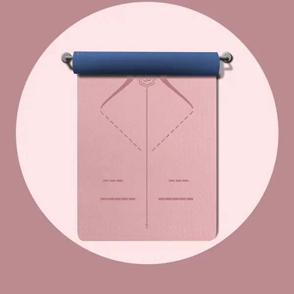

Eco TPE 183cm*61cm*6 / 8mm / 183cm*80cm*6 / 8mm / O personalizable, 8 mm de grosor. Textura antideslizante de doble capa, reciclable, PVClibre de sustancias nocivas e inodoro: la esterilla más versátil para estudios, gimnasios y programas de marca propia.
| Material | TPE |
|---|---|
| Tamaño | 183cm*61cm*6 / 8mm / 183cm*80cm*6 / 8mm / O personalizable |
| Espesor | 8 mm |
| Peso | 700g / 950g / 950g / 1200g |
| Cantidad mínima de pedido | 100 unidades |
| Colores | Azul grisáceo + azul marino / Morado mágico + gris claro / Verde matcha + gris oscuro / Rosa goma + azul marino / Rosa rouge + gris claro / O personalizable |
| Cumplimiento normativo | ROHS / CE / ISO 9001 / BSCI / REACH |
Fabricado con ecoTPEe de doble capa, un material ligero, reciclable y libre de «PVC» y olores tóxicos. Ambas caras presentan una textura que mejora el agarre, y la gama incluye modelos monocromáticos y bicolores, lo que permite ofrecer una gama completa de anchuras y espesores bajo una misma marca.
Asistencia completa en OEM/ODM: material, tamaño, grosor, color, bicolor, impresión de logotipos, relieve y embalaje. Muestras físicas listas en 7 días según tus especificaciones.
Ideal para estudios de yoga, gimnasios, clases de yoga caliente, venta al por menor con marca propia y obsequios promocionales.
Solicita hoy mismo un presupuesto personalizado y muestras gratuitas.
Ponte en contacto con nuestro equipo